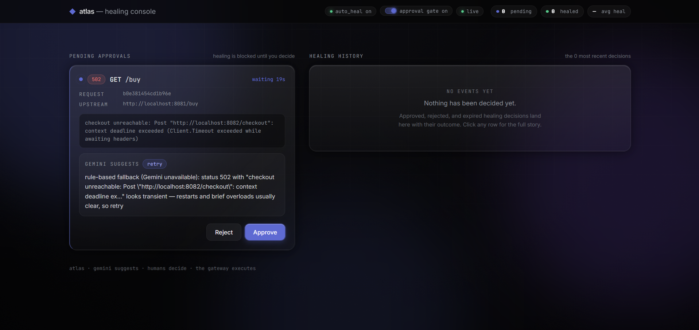
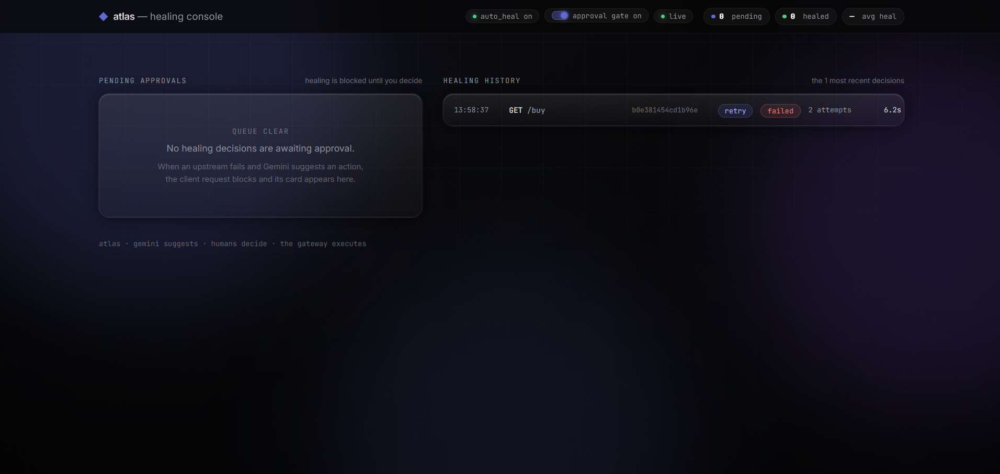
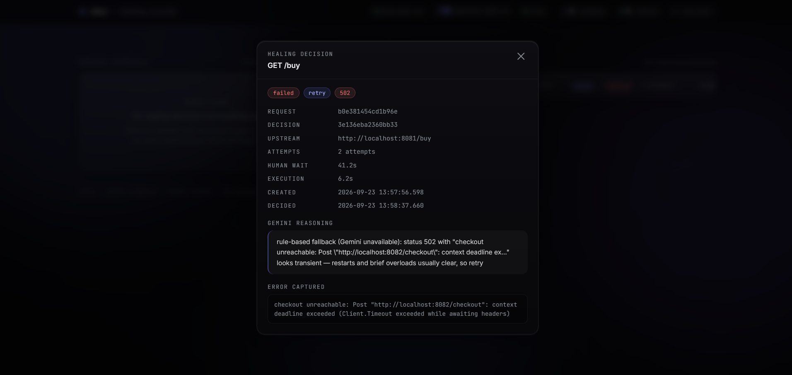

When a request fails, atlas captures the full context, asks Google Gemini what to do, shows the plan on a live dashboard, and — once a human approves — retries, reroutes, or gracefully gives up. Every decision is logged. Nothing happens in the dark.
A payment service dies mid-traffic. Watch the gateway catch the failure, ask the AI, push an approval card to the operator's screen in real time, and — on approval — retry the request to success. No page reloads anywhere.
The gateway sees a 4xx/5xx (or a dead connection) and freezes the full context: request, headers, body, error, timing — keyed by a correlation ID.
Gemini reads the context and picks an action — retry, fallback, or give up — with a written reason. If the AI is unreachable, a deterministic rule engine takes over and says so.
The suggestion appears as a live card on the console (pushed over SSE). The original request waits. A human clicks Approve — or Reject, or lets it expire.
On approval the gateway replays the request with exponential backoff, or reroutes to the fallback. The waiting client simply gets a normal 200. The audit trail records everything.
Every healing decision — pending, approved, rejected, expired, auto-healed — is visible in real time, with the AI's reasoning and the full request context one click away.



Imagine a restaurant. Your waiter (the gateway) takes your order to the kitchen (your services).
Tonight, one of the kitchen stations is on fire. A normal waiter just comes back and says "we can't serve you." Your order dies.
The atlas waiter is different. He notices the fire, asks the chef what to do (Gemini), brings the suggestion to the manager (you, on the dashboard): "Station 3 is down — shall I send your order to the backup kitchen, or wait two minutes and try again?"
The manager nods. The waiter re-places the order. You never knew there was a fire — your food just arrived.
atlas is a reverse proxy written in Go. It sits in front of your HTTP services and forwards requests to them.
When an upstream fails, it captures the request context and asks an LLM to classify the failure and propose an action from a fixed, safe menu: retry with backoff, reroute to a fallback, or give up.
With the approval gate on, a human confirms each action in a live web console before anything executes. With it off, healing is fully automatic.
Production guardrails are built in: circuit breakers stop retry storms, a latency budget caps how long healing may take, and every action lands in an immutable audit history.
Gemini reads the actual error — status, body, headers, timing — and returns structured JSON, validated against a closed set of actions. Hallucinated actions are rejected at the door.
When the LLM is overloaded or offline, a deterministic rule engine keeps healing alive — and every suggestion discloses which brain produced it. Degradation is visible, never silent.
Approval mode blocks the failing request until a human verdict arrives. Toggle it live from the console — no restart, no config edit.
Per-upstream breakers trip after repeated failures and fast-fail in ~2ms instead of burning LLM calls on a corpse. A latency budget caps every healing run.
Server-Sent Events push pending cards and outcomes the instant they happen. Go templates + htmx — no React, no Node, no build step.
114+ tests including full-stack E2E through the real proxy with fake LLMs, all green under Go's race detector. CI runs vet + race on every push.
Clone it, break a service on purpose, and watch the console catch it live.